最終課題作品
1.スマホスピーカー
普段家で勉強をするときに音楽を流すことがあり、その時に音を大きくできるものを作ろうとしたのがきっかけです。
家にはBoseとBeatsのスピーカーがあるのですが父と弟が主に使用しているため、この機会に制作しようと思いました。
 Cura
Cura プロトタイプ
プロトタイプ
講義で作ったプロトタイプをもとに設計図を作成した。
スケッチ-設計図-
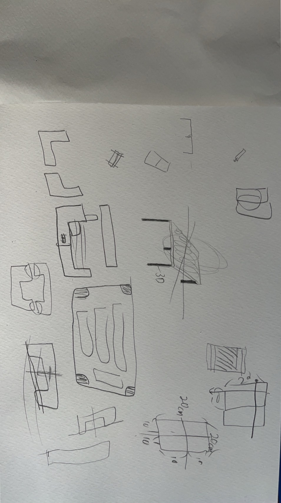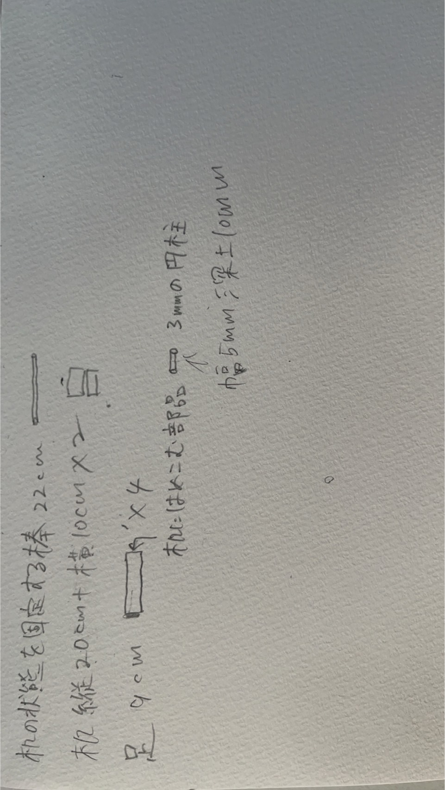
完成品
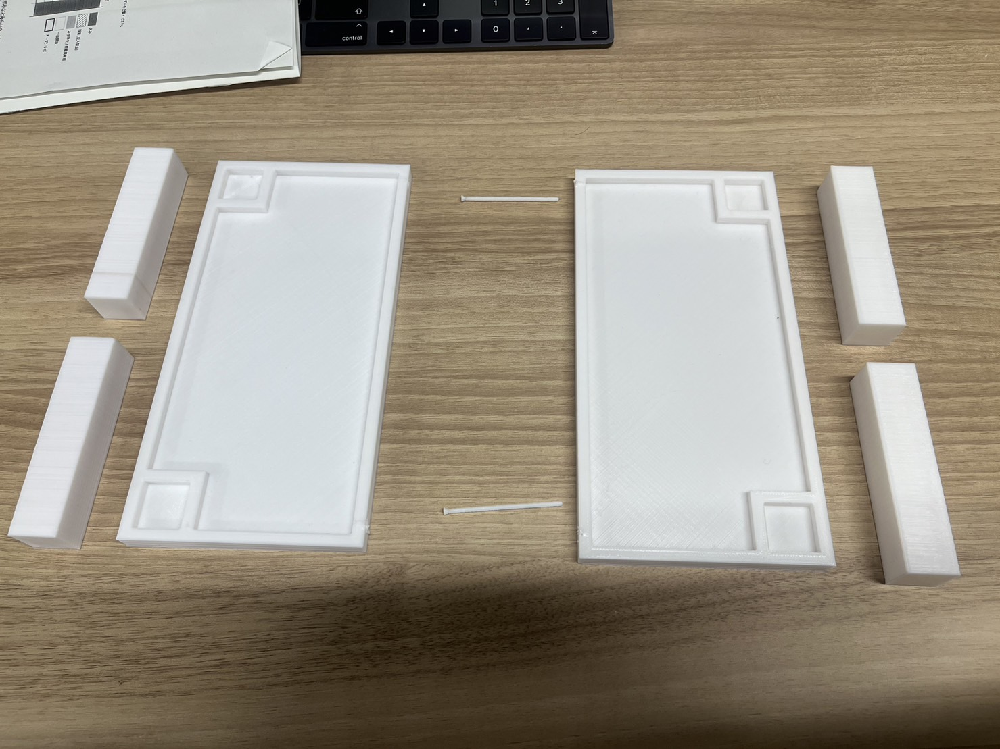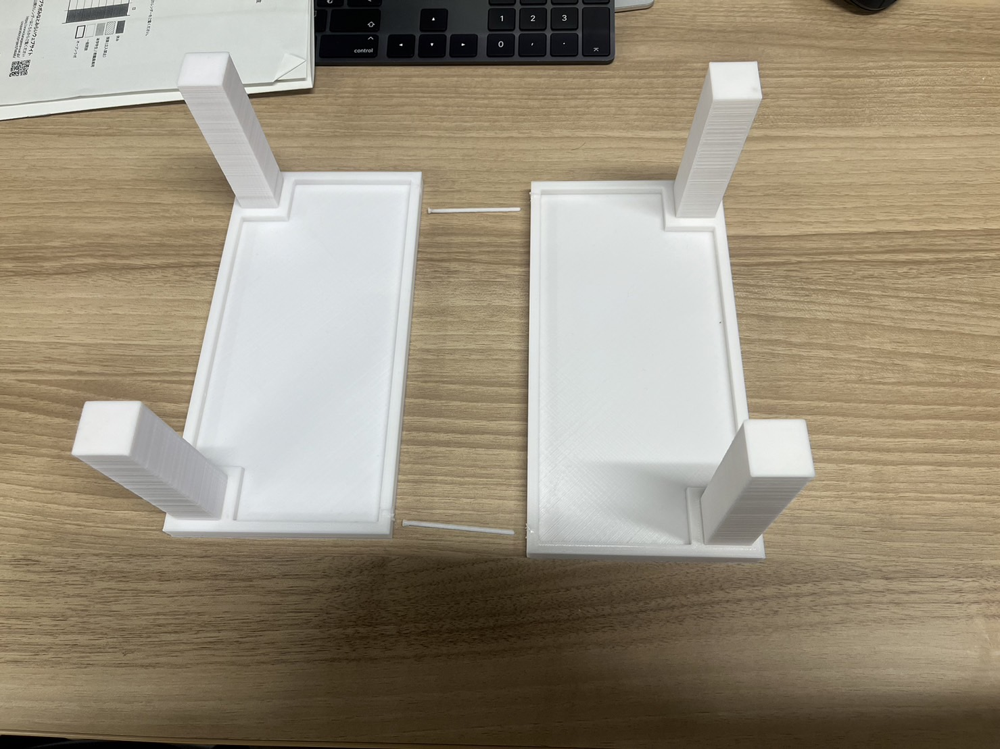
 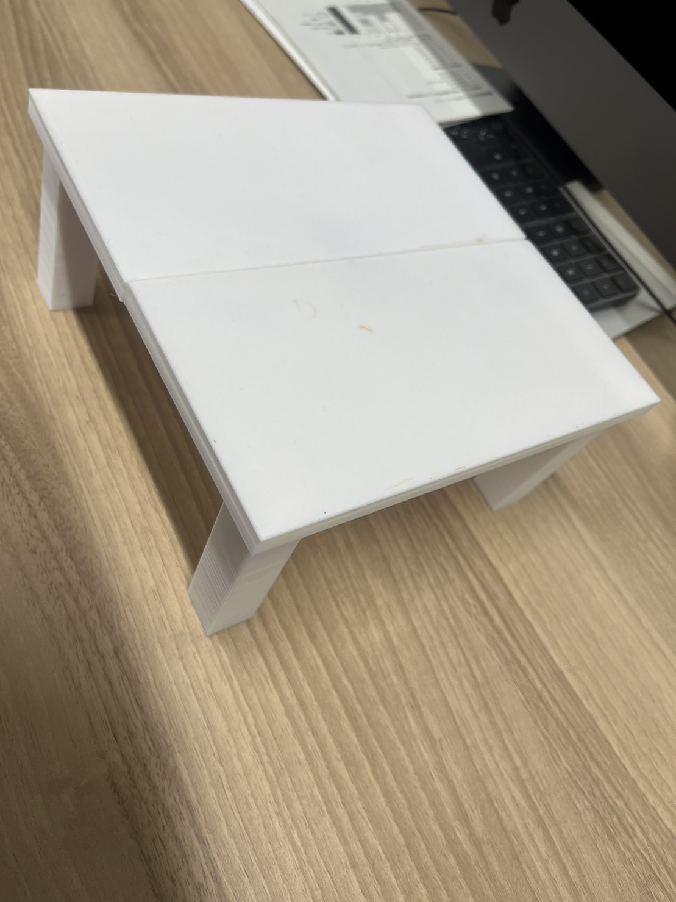
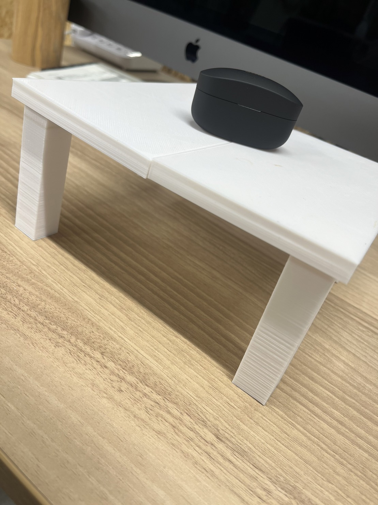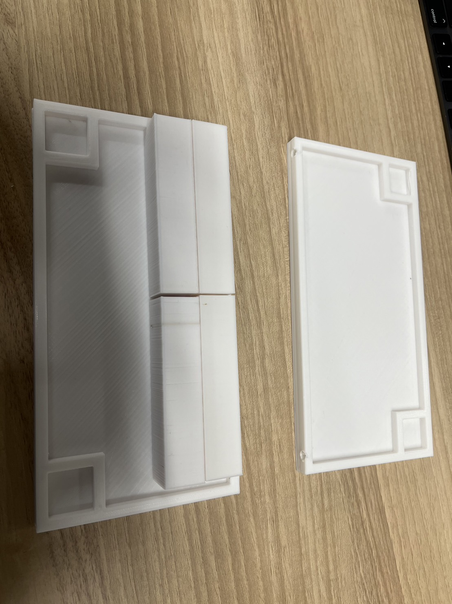
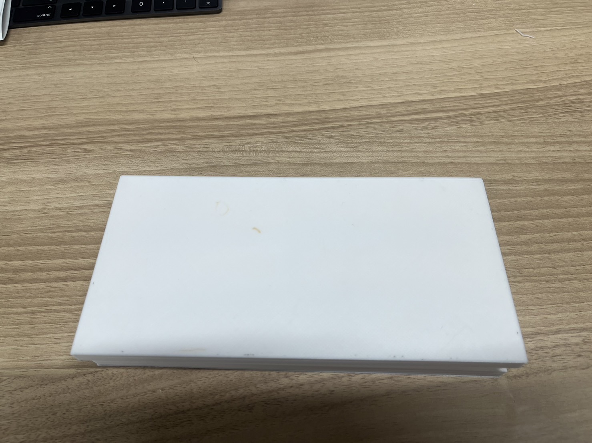
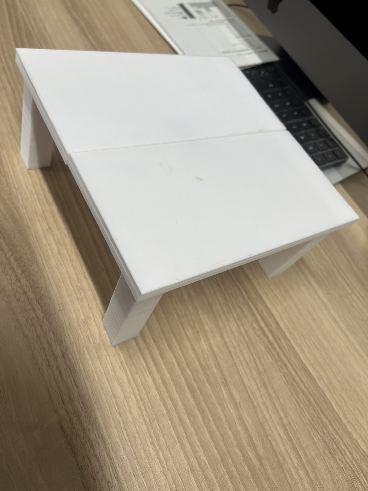
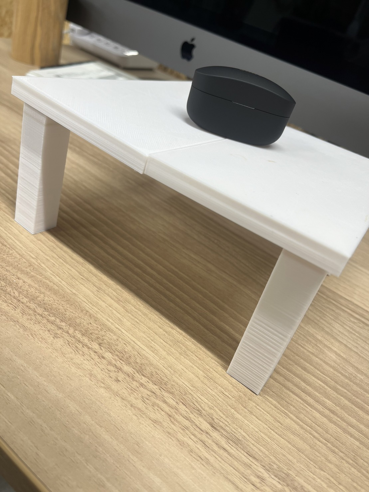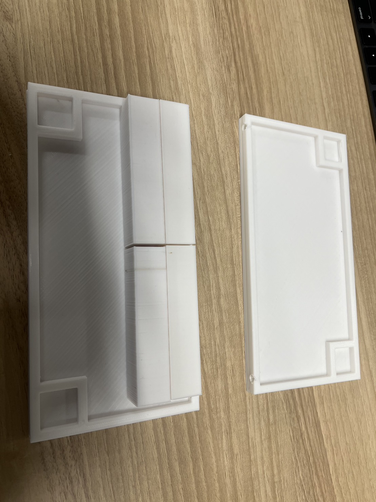
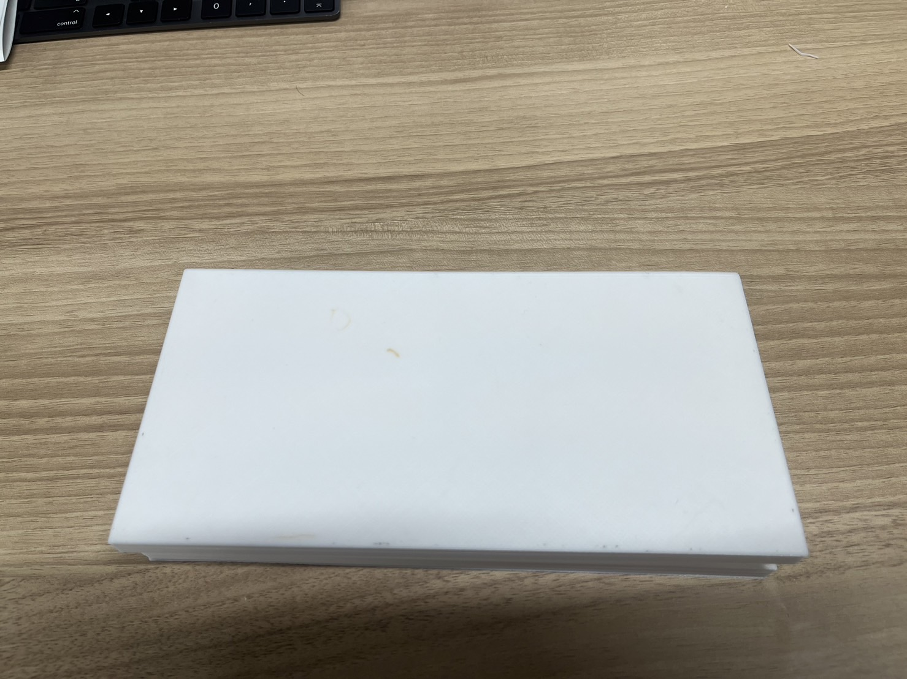まとめ
作品は、3Dプリンターを使用した。組み立て式で制作したかったので木材だとイメージ通りにできないため自由度が高い3Dプリンターを選んだ。
試作品なため机の面積は縦20cm横10cmの200平方センチメートルで制作したが実際に使用できるようにもなっている。
コンパクトな持ち運び可能な机があればどこでもピクニックができるようになるだろう。
使用機材
3Dプリンター協力者
びゃんびゃん班のメンバー
てらAYU
himeri